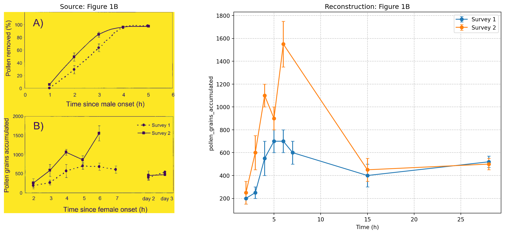

data/csv/Evanhoe2002.csv ### 📄 Extracted Data Table (Ready for Spreadsheet)
| bibtex_nick | Species | time_point_h | variable | value | variation_value | variation_type | series_name | source_figure | Family | breeding_system | total_longevity | ovule_number | pollen_number | image_path | methods_notes | life_form |
|---|---|---|---|---|---|---|---|---|---|---|---|---|---|---|---|---|
| Evanhoe2002 | Campanula americana | 1.0 | pollen_removed_pct | 0.0 | 0.0 | SE | Survey 1 | Figure 1A | Campanulaceae | Protandrous, insect-pollinated (Bombus), self-incompatible mechanism implied (protandry) | 3-5 d (field), 7-10 d (greenhouse) | 100 | None | Data_images/evanhoe2002floral/evanhoe2002floral.jpg | Greenhouse manipulation of pollen removal/deposition; Field survey of morphological and functional phases; Days scaled to 13 daylight hours. | Woodland herb |
| Evanhoe2002 | Campanula americana | 2.0 | pollen_removed_pct | 30.0 | 8.0 | SE | Survey 1 | Figure 1A | Campanulaceae | Protandrous, insect-pollinated (Bombus), self-incompatible mechanism implied (protandry) | 3-5 d (field), 7-10 d (greenhouse) | 100 | None | Data_images/evanhoe2002floral/evanhoe2002floral.jpg | Greenhouse manipulation of pollen removal/deposition; Field survey of morphological and functional phases; Days scaled to 13 daylight hours. | Woodland herb |
| Evanhoe2002 | Campanula americana | 3.0 | pollen_removed_pct | 65.0 | 8.0 | SE | Survey 1 | Figure 1A | Campanulaceae | Protandrous, insect-pollinated (Bombus), self-incompatible mechanism implied (protandry) | 3-5 d (field), 7-10 d (greenhouse) | 100 | None | Data_images/evanhoe2002floral/evanhoe2002floral.jpg | Greenhouse manipulation of pollen removal/deposition; Field survey of morphological and functional phases; Days scaled to 13 daylight hours. | Woodland herb |
| Evanhoe2002 | Campanula americana | 4.0 | pollen_removed_pct | 95.0 | 2.0 | SE | Survey 1 | Figure 1A | Campanulaceae | Protandrous, insect-pollinated (Bombus), self-incompatible mechanism implied (protandry) | 3-5 d (field), 7-10 d (greenhouse) | 100 | None | Data_images/evanhoe2002floral/evanhoe2002floral.jpg | Greenhouse manipulation of pollen removal/deposition; Field survey of morphological and functional phases; Days scaled to 13 daylight hours. | Woodland herb |
| Evanhoe2002 | Campanula americana | 5.0 | pollen_removed_pct | 98.0 | 1.0 | SE | Survey 1 | Figure 1A | Campanulaceae | Protandrous, insect-pollinated (Bombus), self-incompatible mechanism implied (protandry) | 3-5 d (field), 7-10 d (greenhouse) | 100 | None | Data_images/evanhoe2002floral/evanhoe2002floral.jpg | Greenhouse manipulation of pollen removal/deposition; Field survey of morphological and functional phases; Days scaled to 13 daylight hours. | Woodland herb |
| Evanhoe2002 | Campanula americana | 1.0 | pollen_removed_pct | 5.0 | 2.0 | SE | Survey 2 | Figure 1A | Campanulaceae | Protandrous, insect-pollinated (Bombus), self-incompatible mechanism implied (protandry) | 3-5 d (field), 7-10 d (greenhouse) | 100 | None | Data_images/evanhoe2002floral/evanhoe2002floral.jpg | Greenhouse manipulation of pollen removal/deposition; Field survey of morphological and functional phases; Days scaled to 13 daylight hours. | Woodland herb |
| Evanhoe2002 | Campanula americana | 2.0 | pollen_removed_pct | 50.0 | 8.0 | SE | Survey 2 | Figure 1A | Campanulaceae | Protandrous, insect-pollinated (Bombus), self-incompatible mechanism implied (protandry) | 3-5 d (field), 7-10 d (greenhouse) | 100 | None | Data_images/evanhoe2002floral/evanhoe2002floral.jpg | Greenhouse manipulation of pollen removal/deposition; Field survey of morphological and functional phases; Days scaled to 13 daylight hours. | Woodland herb |
| Evanhoe2002 | Campanula americana | 3.0 | pollen_removed_pct | 85.0 | 5.0 | SE | Survey 2 | Figure 1A | Campanulaceae | Protandrous, insect-pollinated (Bombus), self-incompatible mechanism implied (protandry) | 3-5 d (field), 7-10 d (greenhouse) | 100 | None | Data_images/evanhoe2002floral/evanhoe2002floral.jpg | Greenhouse manipulation of pollen removal/deposition; Field survey of morphological and functional phases; Days scaled to 13 daylight hours. | Woodland herb |
| Evanhoe2002 | Campanula americana | 4.0 | pollen_removed_pct | 97.0 | 1.0 | SE | Survey 2 | Figure 1A | Campanulaceae | Protandrous, insect-pollinated (Bombus), self-incompatible mechanism implied (protandry) | 3-5 d (field), 7-10 d (greenhouse) | 100 | None | Data_images/evanhoe2002floral/evanhoe2002floral.jpg | Greenhouse manipulation of pollen removal/deposition; Field survey of morphological and functional phases; Days scaled to 13 daylight hours. | Woodland herb |
| Evanhoe2002 | Campanula americana | 5.0 | pollen_removed_pct | 98.0 | 1.0 | SE | Survey 2 | Figure 1A | Campanulaceae | Protandrous, insect-pollinated (Bombus), self-incompatible mechanism implied (protandry) | 3-5 d (field), 7-10 d (greenhouse) | 100 | None | Data_images/evanhoe2002floral/evanhoe2002floral.jpg | Greenhouse manipulation of pollen removal/deposition; Field survey of morphological and functional phases; Days scaled to 13 daylight hours. | Woodland herb |
| Evanhoe2002 | Campanula americana | 2.0 | pollen_grains_accumulated | 200.0 | 50.0 | SE | Survey 1 | Figure 1B | Campanulaceae | Protandrous, insect-pollinated (Bombus), self-incompatible mechanism implied (protandry) | 3-5 d (field), 7-10 d (greenhouse) | 100 | None | Data_images/evanhoe2002floral/evanhoe2002floral.jpg | Greenhouse manipulation of pollen removal/deposition; Field survey of morphological and functional phases; Days scaled to 13 daylight hours. | Woodland herb |
| Evanhoe2002 | Campanula americana | 3.0 | pollen_grains_accumulated | 250.0 | 50.0 | SE | Survey 1 | Figure 1B | Campanulaceae | Protandrous, insect-pollinated (Bombus), self-incompatible mechanism implied (protandry) | 3-5 d (field), 7-10 d (greenhouse) | 100 | None | Data_images/evanhoe2002floral/evanhoe2002floral.jpg | Greenhouse manipulation of pollen removal/deposition; Field survey of morphological and functional phases; Days scaled to 13 daylight hours. | Woodland herb |
| Evanhoe2002 | Campanula americana | 4.0 | pollen_grains_accumulated | 550.0 | 150.0 | SE | Survey 1 | Figure 1B | Campanulaceae | Protandrous, insect-pollinated (Bombus), self-incompatible mechanism implied (protandry) | 3-5 d (field), 7-10 d (greenhouse) | 100 | None | Data_images/evanhoe2002floral/evanhoe2002floral.jpg | Greenhouse manipulation of pollen removal/deposition; Field survey of morphological and functional phases; Days scaled to 13 daylight hours. | Woodland herb |
| Evanhoe2002 | Campanula americana | 5.0 | pollen_grains_accumulated | 700.0 | 100.0 | SE | Survey 1 | Figure 1B | Campanulaceae | Protandrous, insect-pollinated (Bombus), self-incompatible mechanism implied (protandry) | 3-5 d (field), 7-10 d (greenhouse) | 100 | None | Data_images/evanhoe2002floral/evanhoe2002floral.jpg | Greenhouse manipulation of pollen removal/deposition; Field survey of morphological and functional phases; Days scaled to 13 daylight hours. | Woodland herb |
| Evanhoe2002 | Campanula americana | 6.0 | pollen_grains_accumulated | 700.0 | 100.0 | SE | Survey 1 | Figure 1B | Campanulaceae | Protandrous, insect-pollinated (Bombus), self-incompatible mechanism implied (protandry) | 3-5 d (field), 7-10 d (greenhouse) | 100 | None | Data_images/evanhoe2002floral/evanhoe2002floral.jpg | Greenhouse manipulation of pollen removal/deposition; Field survey of morphological and functional phases; Days scaled to 13 daylight hours. | Woodland herb |
| Evanhoe2002 | Campanula americana | 7.0 | pollen_grains_accumulated | 600.0 | 100.0 | SE | Survey 1 | Figure 1B | Campanulaceae | Protandrous, insect-pollinated (Bombus), self-incompatible mechanism implied (protandry) | 3-5 d (field), 7-10 d (greenhouse) | 100 | None | Data_images/evanhoe2002floral/evanhoe2002floral.jpg | Greenhouse manipulation of pollen removal/deposition; Field survey of morphological and functional phases; Days scaled to 13 daylight hours. | Woodland herb |
| Evanhoe2002 | Campanula americana | 15.0 | pollen_grains_accumulated | 400.0 | 100.0 | SE | Survey 1 | Figure 1B | Campanulaceae | Protandrous, insect-pollinated (Bombus), self-incompatible mechanism implied (protandry) | 3-5 d (field), 7-10 d (greenhouse) | 100 | None | Data_images/evanhoe2002floral/evanhoe2002floral.jpg | Greenhouse manipulation of pollen removal/deposition; Field survey of morphological and functional phases; Days scaled to 13 daylight hours. | Woodland herb |
| Evanhoe2002 | Campanula americana | 28.0 | pollen_grains_accumulated | 520.0 | 50.0 | SE | Survey 1 | Figure 1B | Campanulaceae | Protandrous, insect-pollinated (Bombus), self-incompatible mechanism implied (protandry) | 3-5 d (field), 7-10 d (greenhouse) | 100 | None | Data_images/evanhoe2002floral/evanhoe2002floral.jpg | Greenhouse manipulation of pollen removal/deposition; Field survey of morphological and functional phases; Days scaled to 13 daylight hours. | Woodland herb |
| Evanhoe2002 | Campanula americana | 2.0 | pollen_grains_accumulated | 250.0 | 100.0 | SE | Survey 2 | Figure 1B | Campanulaceae | Protandrous, insect-pollinated (Bombus), self-incompatible mechanism implied (protandry) | 3-5 d (field), 7-10 d (greenhouse) | 100 | None | Data_images/evanhoe2002floral/evanhoe2002floral.jpg | Greenhouse manipulation of pollen removal/deposition; Field survey of morphological and functional phases; Days scaled to 13 daylight hours. | Woodland herb |
| Evanhoe2002 | Campanula americana | 3.0 | pollen_grains_accumulated | 600.0 | 150.0 | SE | Survey 2 | Figure 1B | Campanulaceae | Protandrous, insect-pollinated (Bombus), self-incompatible mechanism implied (protandry) | 3-5 d (field), 7-10 d (greenhouse) | 100 | None | Data_images/evanhoe2002floral/evanhoe2002floral.jpg | Greenhouse manipulation of pollen removal/deposition; Field survey of morphological and functional phases; Days scaled to 13 daylight hours. | Woodland herb |
| Evanhoe2002 | Campanula americana | 4.0 | pollen_grains_accumulated | 1100.0 | 100.0 | SE | Survey 2 | Figure 1B | Campanulaceae | Protandrous, insect-pollinated (Bombus), self-incompatible mechanism implied (protandry) | 3-5 d (field), 7-10 d (greenhouse) | 100 | None | Data_images/evanhoe2002floral/evanhoe2002floral.jpg | Greenhouse manipulation of pollen removal/deposition; Field survey of morphological and functional phases; Days scaled to 13 daylight hours. | Woodland herb |
| Evanhoe2002 | Campanula americana | 5.0 | pollen_grains_accumulated | 900.0 | 100.0 | SE | Survey 2 | Figure 1B | Campanulaceae | Protandrous, insect-pollinated (Bombus), self-incompatible mechanism implied (protandry) | 3-5 d (field), 7-10 d (greenhouse) | 100 | None | Data_images/evanhoe2002floral/evanhoe2002floral.jpg | Greenhouse manipulation of pollen removal/deposition; Field survey of morphological and functional phases; Days scaled to 13 daylight hours. | Woodland herb |
| Evanhoe2002 | Campanula americana | 6.0 | pollen_grains_accumulated | 1550.0 | 200.0 | SE | Survey 2 | Figure 1B | Campanulaceae | Protandrous, insect-pollinated (Bombus), self-incompatible mechanism implied (protandry) | 3-5 d (field), 7-10 d (greenhouse) | 100 | None | Data_images/evanhoe2002floral/evanhoe2002floral.jpg | Greenhouse manipulation of pollen removal/deposition; Field survey of morphological and functional phases; Days scaled to 13 daylight hours. | Woodland herb |
| Evanhoe2002 | Campanula americana | 15.0 | pollen_grains_accumulated | 450.0 | 100.0 | SE | Survey 2 | Figure 1B | Campanulaceae | Protandrous, insect-pollinated (Bombus), self-incompatible mechanism implied (protandry) | 3-5 d (field), 7-10 d (greenhouse) | 100 | None | Data_images/evanhoe2002floral/evanhoe2002floral.jpg | Greenhouse manipulation of pollen removal/deposition; Field survey of morphological and functional phases; Days scaled to 13 daylight hours. | Woodland herb |
| Evanhoe2002 | Campanula americana | 28.0 | pollen_grains_accumulated | 500.0 | 50.0 | SE | Survey 2 | Figure 1B | Campanulaceae | Protandrous, insect-pollinated (Bombus), self-incompatible mechanism implied (protandry) | 3-5 d (field), 7-10 d (greenhouse) | 100 | None | Data_images/evanhoe2002floral/evanhoe2002floral.jpg | Greenhouse manipulation of pollen removal/deposition; Field survey of morphological and functional phases; Days scaled to 13 daylight hours. | Woodland herb |
🖼️ Figure Verification
Source: Figure 1A (Data_images/evanhoe2002floral/evanhoe2002floral.jpg)

Source: Figure 1B (Data_images/evanhoe2002floral/evanhoe2002floral.jpg)

✅ Process Complete.